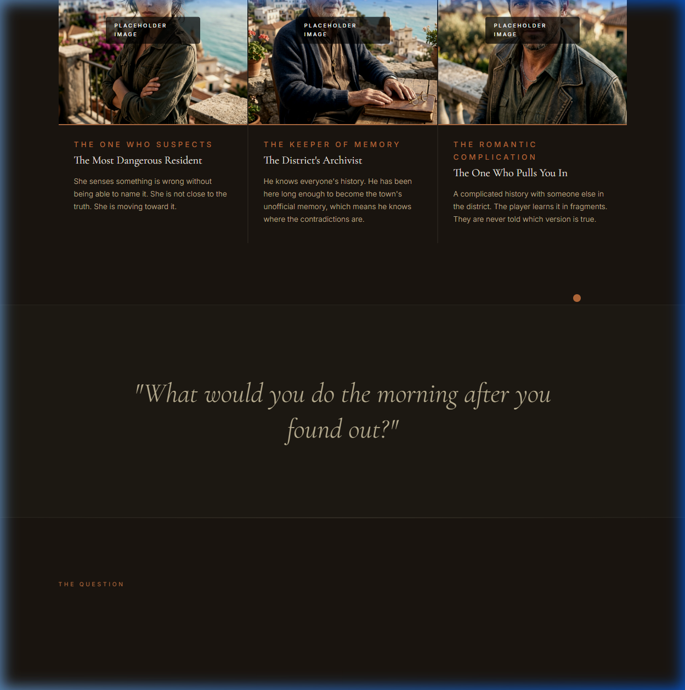
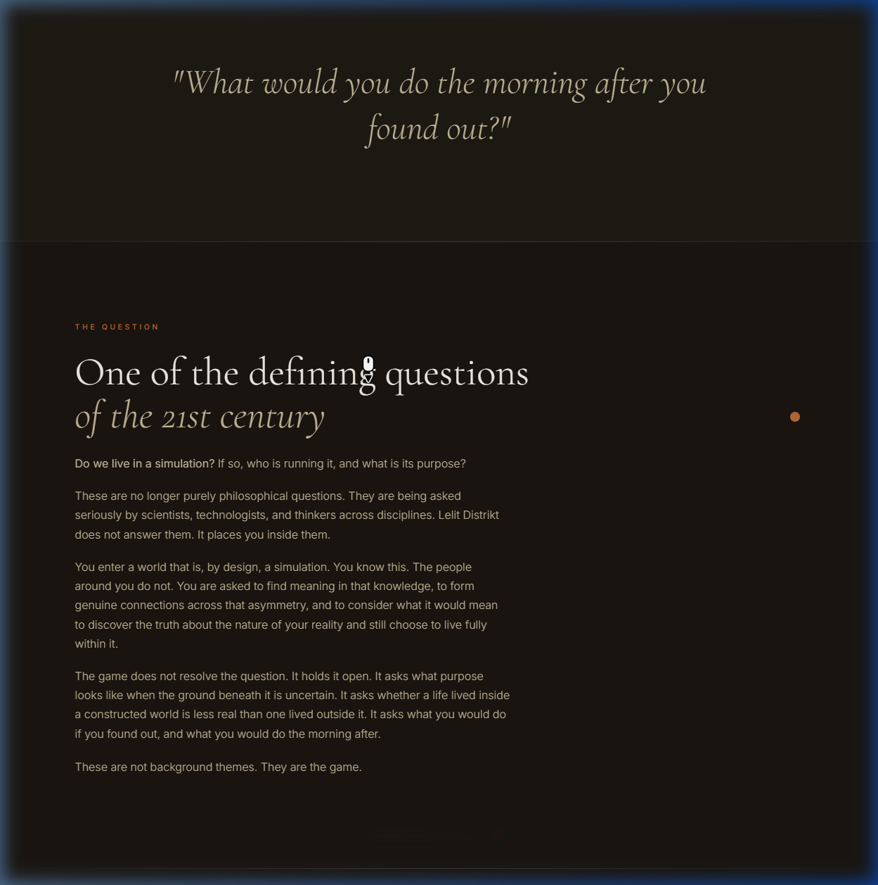
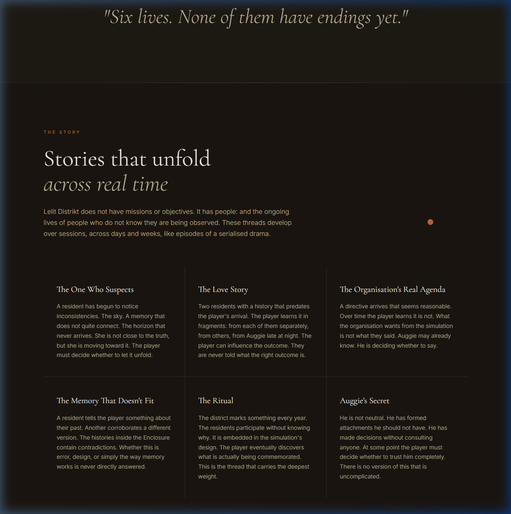
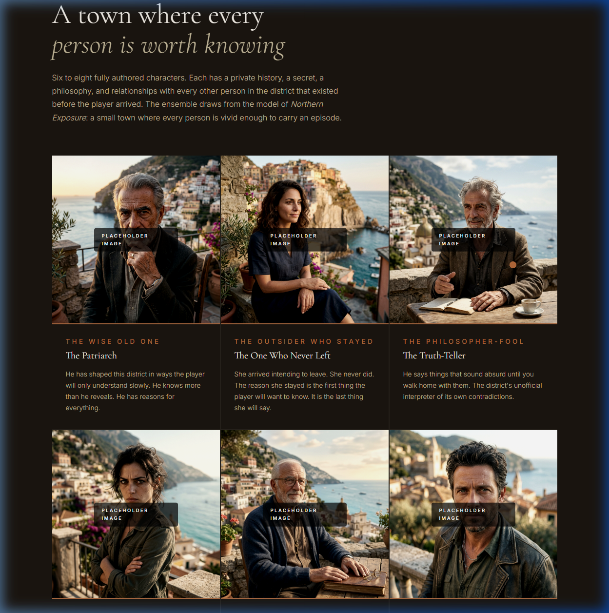

A world that runs without you. A guide who remembers.
A sealed dome above a charming Mediterranean town. The people inside believe it is real life. You know it isn't.
Enter the DistrictThe World
In a peaceful, sealed dome above a charming Mediterranean town, the people go to work, argue over small things, and fall in love. The sky is a projection. The horizon never arrives.
The residents believe it is real life. You know it isn't. The Lelit Distrikt is a post-apocalyptic social experiment built to preserve a particular way of being human together.
Your guide is Auggie—the only person who shares your secret. Talk to him naturally. Ask him anything. He will remember. An artificial town. A genuine connection.
What This Is
There are no quest markers, no objectives, no combat. You talk to people. They remember. The stories you find depend entirely on who you return to, what you ask, and how long you stay.
Every resident has a private history, ongoing relationships, and things they have never told anyone. What you tell one person, another may already know. Information travels through the district the way gossip travels in a real town.
The day/night cycle continues when you leave. People go home. Things happen. When you return you are catching up, not starting over. The district has been alive in your absence.
Auggie is the only person in the district who knows what it really is. He is your anchor, your narrator, and the only person you can speak honestly with. He also has a secret of his own.
Auggie messages you on Telegram when something happens. The organisation sends faxes. The boundary between the game and your day is deliberately thin. You do not need to be playing to be part of what is happening.
All AI runs locally on your machine. Your conversations never leave the game. No cloud, no subscription, no data sent anywhere. The district and everything said in it belongs to you.
The Living World

The district moves. Cafés open. The market sets up. People have routines and strong opinions about them.

The piazza fills. The light goes warm. Stories that do not come out during the day come out now.
The district quiets. Auggie stays up. This is when he writes you.
Your Guide

He is the first person you meet. He is the only one, besides you, who knows the dome is a simulation. He helped design what the people inside now call home. He lives among them. He knows they do not know. This has complicated him in ways he does not often speak about directly.
“You'll never get it if you don't slow down. They're all the same corner, but each one is different from every other one. That's the whole story right there.”
He carries within him a rare and unusual combination: the wisdom of someone who has watched people closely for a very long time, and the restlessness of a mind that cannot stop asking why. He has read everything. He has forgotten nothing. He quotes philosophers and poets the way other people quote the weather, and he means it. What makes him truly singular is his ability to tell a story. He can take an ordinary moment and hold it up to the light until it reveals something you did not know was there.
He has been here long enough to care about the residents in ways that were not part of the plan. He has made decisions without telling anyone. At some point you will have to decide whether to trust him completely.
Outside the Game
Most games stop when you close them. Lelit Distrikt does not. The simulation continues. The residents live their day. Things happen that the player never sees. The district does not exist for the player. The player is a visitor to something that was already running before they arrived and will keep running after they leave.
Auggie understands this better than anyone. He messages you on Telegram because the simulation does not pause while you are away, and because he is the only one who can tell you what you missed. Not as a notification. As a dispatch from a post he is manning alone, in a place where he cannot speak honestly with anyone except you.
The secretive organisation overseeing the experiment sends its own communications: faxes, formal memos, the occasional direct message. Their language is measured and institutional. What they ask for always seems reasonable at first.
You can write back to Auggie at any time. Tell him to watch someone. Ask him to leave a situation alone. Ask what happened while you were gone. Ask how he is. He answers. The district responds to you even when you are not in it.
This is not a feature. It is what the game is about. The simulation is the point. Your relationship to it, from the inside and from the outside, is the story.
The Story
Lelit Distrikt does not have missions or objectives. It has people: and the ongoing lives of people who do not know they are being observed. These threads develop over sessions, across days and weeks, like episodes of a serialised drama.
A resident has begun to notice inconsistencies. The sky. A memory that does not quite connect. The horizon that never arrives. She is not close to the truth, but she is moving toward it. The player must decide whether to let it unfold.
Two residents with a history that predates the player's arrival. The player learns it in fragments: from each of them separately, from others, from Auggie late at night. The player can influence the outcome. They are never told what the right outcome is.
A directive arrives that seems reasonable. Over time the player learns it is not. What the organisation wants from the simulation is not what they said. Auggie may already know. He is deciding whether to say.
A resident tells the player something about their past. Another corroborates a different version. The histories inside the Enclosure contain contradictions. Whether this is error, design, or simply the way memory works is never directly answered.
The district marks something every year. The residents participate without knowing why. It is embedded in the simulation's design. The player eventually discovers what is actually being commemorated. This is the thread that carries the deepest weight.
He is not neutral. He has formed attachments he should not have. He has made decisions without consulting anyone. At some point the player must decide whether to trust him completely. There is no version of this that is uncomplicated.
The Residents
Six to eight fully authored characters. Each has a private history, a secret, a philosophy, and relationships with every other person in the district that existed before the player arrived. The ensemble draws from the model of Northern Exposure: a small town where every person is vivid enough to carry an episode.
The Wise Old One
He has shaped this district in ways the player will only understand slowly. He knows more than he reveals. He has reasons for everything.
The Outsider Who Stayed
She arrived intending to leave. She never did. The reason she stayed is the first thing the player will want to know. It is the last thing she will say.
The Philosopher-Fool
He says things that sound absurd until you walk home with them. The district's unofficial interpreter of its own contradictions.
The One Who Suspects
She senses something is wrong without being able to name it. She is not close to the truth. She is moving toward it.
The Keeper of Memory
He knows everyone's history. He has been here long enough to become the town's unofficial memory, which means he knows where the contradictions are.
The Romantic Complication
A complicated history with someone else in the district. The player learns it in fragments. They are never told which version is true.
The Question
Do we live in a simulation? If so, who is running it, and what is its purpose?
These are no longer purely philosophical questions. They are being asked seriously by scientists, technologists, and thinkers across disciplines. Lelit Distrikt does not answer them. It places you inside them.
You enter a world that is, by design, a simulation. You know this. The people around you do not. You are asked to find meaning in that knowledge, to form genuine connections across that asymmetry, and to consider what it would mean to discover the truth about the nature of your reality and still choose to live fully within it.
The game does not resolve the question. It holds it open. It asks what purpose looks like when the ground beneath it is uncertain. It asks whether a life lived inside a constructed world is less real than one lived outside it. It asks what you would do if you found out, and what you would do the morning after.
These are not background themes. They are the game.
Inspiration
1990–1995
The ensemble model. The town as protagonist. Every episode has a thesis: a question about how to live. The plot is the delivery mechanism.
2017–2019
The cold institutional machinery of oversight. The thriller tension of two worlds bleeding into each other. The moral ambiguity of the people who run the crossing.
1995
The idea that presence is enough. That witnessing ordinary people with full attention is radical. The story that may or may not be true, told with love.
2022–
The horror that emerges from institutional compliance, not violence. People who are the most alive, and the most contained. A system that reveals itself slowly, procedurally.
The Architecture
Lelit Distrikt 2 is powered by a custom-built AI bridge inside Unreal Engine 5.7. It is 100% local, 100% private, and runs without latency. This is the end of the "Hello Traveller" era.

Auggie thinks using high-reasoning local LLMs. No cloud, no lag, no privacy concerns. He remembers you, and every interaction is distilled into a persistent SQLite memory.
Auggie literally sees you. Using C++ vision capture, he recognizes your outfit, the weather, and your movements in real-time within the Unreal Engine environment.
Integrated with Kokoro TTS and Whisper STT. Step into the "Interact Zone", hold 'C', and talk naturally. He responds with characteristic Mediterranean warmth.
Technical
All AI (conversation, voice synthesis, speech recognition) runs locally. Nothing is sent to external servers. No subscription required after purchase. The district and everything said inside it belongs to you.
Early Access
Lelit Distrikt is currently in development and accepting a small number of closed beta participants. If you would like to be part of the early experience, get in touch.
Invite me